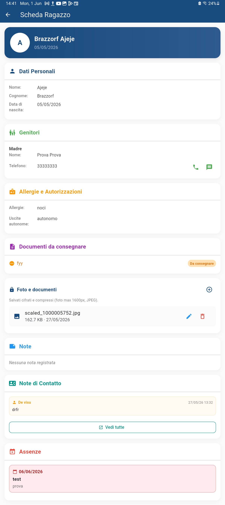

Il cuore di CatechHub: tieni traccia di tutti i ragazzi del catechismo in un unico posto sicuro
L'Anagrafica Ragazzi è il punto di partenza di ogni attività con CatechHub. Qui puoi registrare, cercare e gestire i profili di tutti i bambini e ragazzi iscritti al catechismo. Ogni profilo contiene le informazioni essenziali per la gestione quotidiana: dati anagrafici, contatti dei genitori, eventuali allergie e autorizzazioni alle uscite.
Inserisci nome, cognome, data di nascita, classe e gruppo di catechismo. Puoi aggiungere anche i contatti di mamma e papà, eventuali note e informazioni mediche. I nomi vengono automaticamente formattati in modo corretto (prime lettere maiuscole) per mantenere tutto ordinato senza sforzo.
Dalla lista principale, un tap prolungato apre la Quick View: una scheda compatta con i dati essenziali del ragazzo. Da qui puoi vedere subito se ci sono allergie, uscite autorizzate o note importanti, senza aprire il profilo completo.


La barra di ricerca ti permette di trovare un ragazzo in tempo reale mentre digiti: funziona su nome, cognome, classe e note. I risultati compaiono istantaneamente, anche con dati accentati o maiuscole/minuscole diverse.
| Informazione | Utilità |
|---|---|
| Nome e cognome | Identificazione del ragazzo |
| Data di nascita | Verifica età e requisiti |
| Classe / Gruppo | Organizzazione per gruppi di catechismo |
| Contatti genitori | Comunicazioni rapide con le famiglie |
| Allergie | Informazioni mediche critiche per la sicurezza |
| Uscita autonoma | Autorizzazione a uscire da solo dopo l'incontro |
| Note | Appunti del catechista, visibili solo a te |
Le informazioni su allergie e autorizzazioni alle uscite sono sempre visibili in ogni schermata dell'app, con badge colorati e avvisi immediati. In questo modo non rischi mai di dimenticare una condizione medica importante o un'autorizzazione necessaria. Puoi approfondire nella sezione dedicata Allergie e Uscite Autonome.